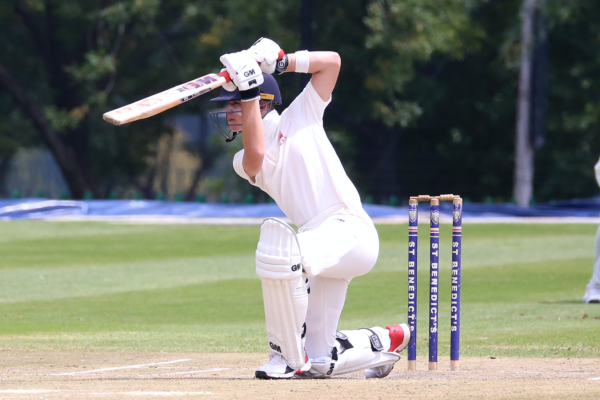
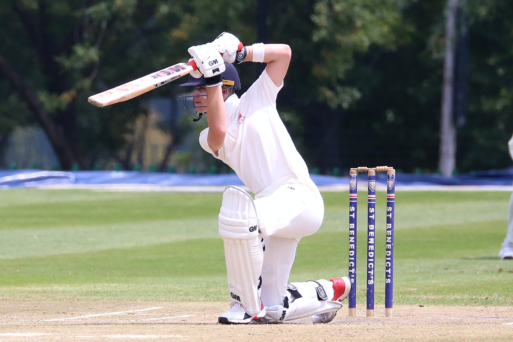

My name is Sachit Goyal and I want to share my favorite summer activities. These include scuba-diving alongside coral reefs and deep caves, playing cricket with my friends on a sweltering summer day and relaxing at the beach while sunbathing. I developed a passion for scuba diving four years back when I first visited the Great Barrier Reef. Diving there made me realize the beauty hidden beneath the ocean. Since then, I have become a PADI Advanced Open-Water Certified and explored dive sites at Sipadan, Malaysia and Lakshwadeep, India. Moving on, my love for the ocean transaltes to my love for the beach where I can spend my day laying on my chair. Lastly, I have played cricket since I was 8 years old and I feel that is something which encapsulates my whole childhood. During summer, I play cricket along with my friends early morning which not only energizes me but also makes me learn about teamwork and cooperation.
Summer Activities

 
